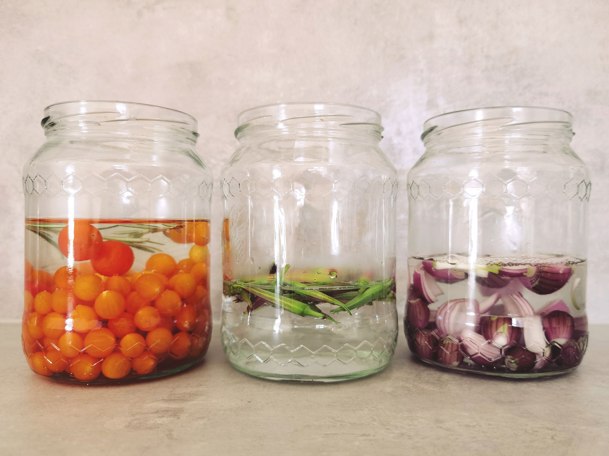
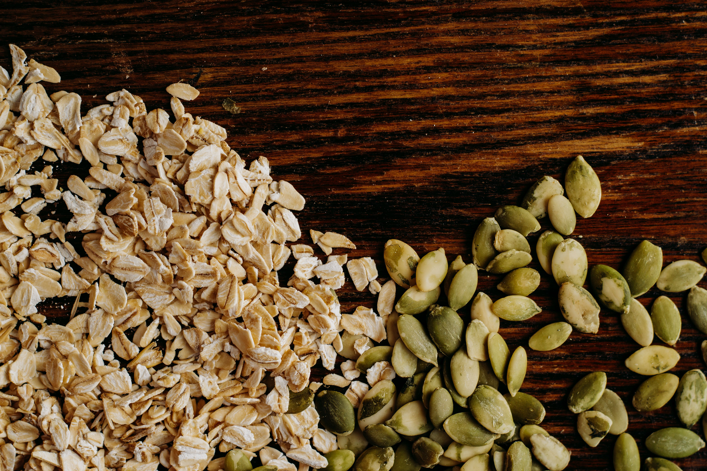

Understanding Naturopathy
Naturopathy takes a whole-person approach to wellbeing, exploring how lifestyle, nutrition, the body's natural processes and the environment can influence health. It encourages learning about the factors that support wellbeing while recognising the importance of appropriate medical care when needed.
At Infinite Infusions, we explore naturopathy through curiosity, knowledge and respect for the natural world. We look at how the body's systems work, how everyday habits can influence wellbeing, and how traditional approaches relate to current scientific understanding.
THE NATUROPATHIC PHILOSOPHY
Treat the whole person.
A holistic approach considers the individual as a whole, recognising the relationship between physical health, emotional wellbeing, lifestyle and environment.
Water and Hydration
Water is essential to life. It helps regulate body temperature, transport nutrients, support digestion and maintain the body's fluid balance. We continually lose water through urine, sweat, breathing and bowel movements, so regular fluid intake helps replace those losses.
The kidneys help regulate water and electrolyte levels. They filter the blood, remove waste products and adjust how much water is returned to the circulation or excreted in urine. Urine colour can offer a rough clue to hydration, although foods, supplements and medicines can also affect it.
Fluid needs vary with activity, temperature and individual circumstances. Drinking regularly and eating water-rich foods can help maintain hydration. Anyone advised to restrict fluids for a medical condition should follow their clinician's advice.
The Digestive System and Gut Health
The digestive system does far more than break down the food we eat. It helps transform food into the nutrients our bodies need and supports many aspects of overall wellbeing.
Digestion: From Food to Nourishment
Digestion begins in the mouth, where chewing breaks food into smaller pieces and saliva starts the breakdown of carbohydrates.
In the small intestine, digestive enzymes and bile assist in breaking down fats, proteins and carbohydrates. The resulting nutrients are absorbed and used by the body.
The large intestine absorbs remaining water and electrolytes. It is also home to a diverse community of microorganisms that contribute to digestive health.

The Gut Microbiome
The gut microbiome is the community of microorganisms living within the digestive tract. These include bacteria and other microbes that interact with our food, intestinal lining and immune system.
A varied, balanced diet that includes fibre-rich foods such as vegetables, fruits, whole grains, beans, lentils, nuts and seeds can help support a diverse gut microbiome. Different microorganisms use different food sources, which is one reason dietary variety matters.
The gut microbiome is an active area of scientific research. Researchers are investigating its relationships with digestion, immune function and other aspects of health. Although these connections are important, the microbiome is complex, and individual differences mean that no single approach suits everyone.

Fibre and Regularity
Dietary fibre is found in plant foods and supports digestive health in several ways. Some types of fibre help add bulk to stools, while others can be fermented by gut microorganisms. Certain fibres can also help support regular bowel movements and contribute to healthy cholesterol levels.
Increasing fibre gradually, drinking sufficient fluids and remaining physically active can help support bowel regularity. A sudden increase in fibre may cause bloating or discomfort, so changes are best introduced at a comfortable pace.
The Gut and Emotional Wellbeing
The digestive system and brain communicate through a network often described as the gut-brain axis. This communication involves nerves, hormones, immune signals and microbial activity.
Stress and anxiety can affect digestion, sometimes contributing to symptoms such as abdominal discomfort, changes in appetite, bloating, constipation or diarrhoea. In turn, persistent digestive symptoms can affect mood, sleep and quality of life.
This relationship is not simply a matter of emotions causing physical symptoms. Both psychological and physical factors can contribute, and ongoing digestive problems deserve appropriate assessment rather than being dismissed as stress alone.
Supporting Your Digestive Wellbeing
Everyday habits can help support digestive health. Eating a varied diet, including fibre-rich plant foods, drinking enough fluid, moving regularly and allowing time to eat without rushing are useful starting points. Sleep and stress management may also play a role in overall wellbeing.
There is no single diet that suits everyone. Persistent abdominal pain, unexplained weight loss, blood in the stool, difficulty swallowing or a lasting change in bowel habits should be discussed with a qualified healthcare professional.
At Infinite Infusions, we explore the digestive system as part of the wider relationship between plants, nutrition, lifestyle and wellbeing. By understanding how digestion works, we can make more informed choices that support our bodies while recognising when professional medical advice is needed.